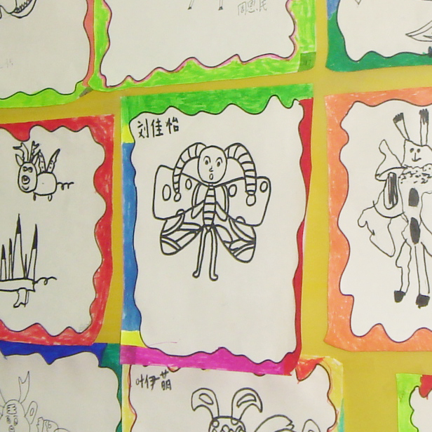
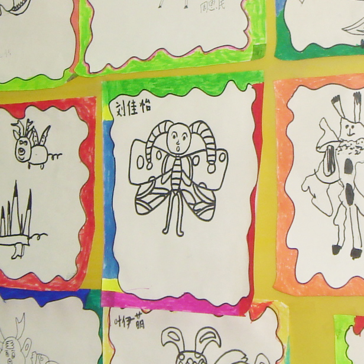

Kingdergarten
Elementary School
 Middle School
Middle School
High School
College
Kingdergarten
Elementary School
Middle School
High School
College
read first
read first
Growth is a process of creating new memories for the future.
It is so lucky that we are living in an era which every family are affordable for photo or video recording devices. When photos and videos join the texts together as tools to keep memories, these memories become more vivid while recalling them some time later.
I think I am lucky. My family began using cameras since my birth to record the growth of me and the family. Honestly, I can’t remember most of my childhood experience, however, the photos and videos which were taken by my mom and dad usually reminds me of details along my route of growth.
Except my family members and my friends, another significant member during my last nineteen years was painting and drawing. I began drawing since my hands could hold pens. Every piece of my work is a mark in my journey called growing up. I am so glad that I turned the childhood hobby into my college major, and maybe even the job several years later.
I believe that none of my work is only a piece of paper. Memories about love, sadness, and togetherness, farewell are hidden behind every piece of drawing or painting. Then I decided to create this page in order to share some of my growing experience with you. Maybe you are my close friend, my family member, or a stranger, however, no matter who you are, I really hope you can enjoy my stories.
William Butler Yeats:
"When you are old and grey and full of sleep,
And nodding by the fire, take down this book,
And slowly read, and dream of the soft look..."